Next: Magnetic inelastic Scattering Up: Application to Neutron scattering Previous: Application to Neutron scattering Contents Index
The coherent inelastic nuclear scattering (by phonons) is given by
- here  denotes the nuclear coherent scattering length and
the
displacement.
If we split the index
denotes the nuclear coherent scattering length and
the
displacement.
If we split the index  into basis and
lattice part
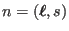 and
compare equation (238), we see that
the nucler scattering function depends on the correlation function between the inner product of
scattering vector and displacement operator
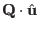, which is the observable in the case of coherent nuclear inelastic neutron scattering
(
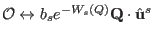).
into basis and
lattice part
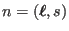 and
compare equation (238), we see that
the nucler scattering function depends on the correlation function between the inner product of
scattering vector and displacement operator
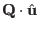, which is the observable in the case of coherent nuclear inelastic neutron scattering
(
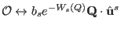).
| 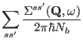 | (250) |
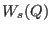 is the Debye-Waller
factor of the atom number  in the unit cell.
in the unit cell.
 denotes the number of magnetic
atoms in the magnetic unit cell.
Therefore, if the generalised eigenvalue problem (235) for the dynamical matrix
has been solved, the nuclear neutron scattering function can
be evaluated with the help of equations (239) and (247):
denotes the number of magnetic
atoms in the magnetic unit cell.
Therefore, if the generalised eigenvalue problem (235) for the dynamical matrix
has been solved, the nuclear neutron scattering function can
be evaluated with the help of equations (239) and (247):
Once the eigenvectors 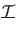 of the system have been determined, this expression can be evaluated. mcdisp evaluates for every mode the expression (264) with exception of the -function and multiplies it by 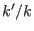 in order to get the nuclear Intensity 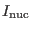 in barns/meV formula unit.